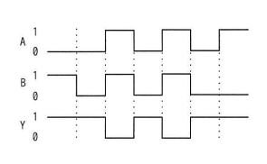
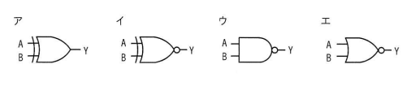

入力がAとB，出力がYの論理回路を動作させたとき，図のタイムチャートが得られた。この論理回路として，適切なものはどれか。
【タイムチャート】
A，B，Yはそれぞれ0または1の値を時間経過とともに取り、図中の各区間における（A，B，Y）の組合せは次のようになっている：①（0，1，1）、②（0，0，1）、③（1，1，0）、④（0，0，1）、⑤（1，1，0）、⑥（0，0，1）、⑦（1，0，1）
これらを重複を除いて整理すると、以下の真理値表が得られる。
| A | B | Y |
|---|---|---|
| 0 | 0 | 1 |
| 0 | 1 | 1 |
| 1 | 0 | 1 |
| 1 | 1 | 0 |
ア （OR形状の記号、出力に丸なし）
イ （OR形状の記号、出力に丸あり：NOR）
ウ （AND形状の記号、出力に丸あり：NAND）
エ （OR形状の記号、出力に丸あり：NOR、ただし入力線の形状が異なるもの）


ウ：NAND（否定論理積）回路
| 選択肢 | 内容 | 補足 |
|---|---|---|
| ア | OR（論理和）の回路記号 | ORはA,Bのいずれかが1なら出力1、両方0のときだけ出力0となり、真理値表（A=0,B=0でY=1）と矛盾するため不適切 |
| イ | NOR（否定論理和）相当の回路記号 | NORはA,Bが両方0のときだけ1を出力し、それ以外は0を出力する。真理値表のA=1,B=0でY=1という結果と矛盾するため不適切 |
| ウ | NAND（否定論理積）の回路記号 | 正解。AND形状の素子に出力側の否定（小さな丸）が付いた記号であり、A,Bが共に1のときだけ0を出力し、それ以外（少なくとも一方が0）のときは1を出力するNANDの真理値表と完全に一致する |
| エ | NOR相当の別形状の回路記号 | イと同様にNOR系の動作を示す記号であり、A=1,B=0でY=1という条件を満たせないため不適切 |
出典：2024年度 春期 応用情報技術者試験 午前 問21（IPA）